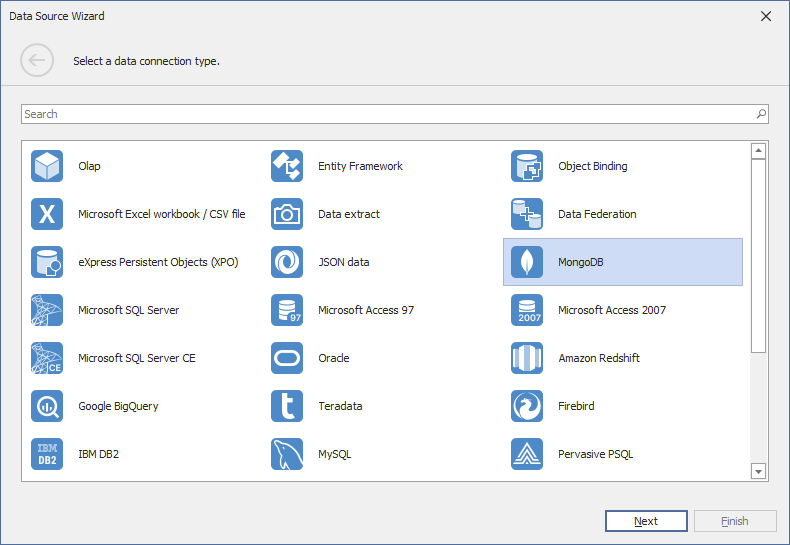

Binding to MongoDB
The WinForms Designer allows you to connect to MongoDB in the Data Source Wizard.
Note
The MongoDB.Driver package should be installed in your project to supply MongoDB data at runtime.
Follow the steps below to establish a database connection:
Click the New Data Source button in the Data Source ribbon tab.

On the first page of the invoked Data Source Wizard dialog, select MongoDB and click Next.

Specify connection parameters on the next page in the following ways:
Pass an entire string.

Refer to the following topic for information about connection string format and options: Connection String URI Format.
Enter connection fields individually.

The following page allows you to configure queries. Select databases and collections that you want to load from the MongoDB instance. A string stored in a query's Collection column is the default name for the query. The names of MongoDB queries should be unique. You can use the Alias column to set unique names for queries in the same collection. To filter queries, add a filter string to the Filter column.